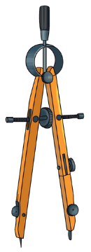

Kenapa
ExtraCourse

ExtraCourse
LES PRIVAT SD · SMP · SMA · UMUM
1 / 7
Bukan
malas.
Bisa jadi anak butuh
pendamping belajar.
0812-2069-3313@extracourse_Jogja
Kenapa
ExtraCourse
ExtraCourse
LES PRIVAT SD · SMP · SMA · UMUM
2 / 7
Rata-rata nilai TKA, dari 100
Matematika
SMP/MTs 2026
100
0
DIY
51,65
tertinggi
se-Indonesia
Sumber: Kemendikdasmen, 2026
Bahasa Inggris
SMA/sederajat 2025
100
0
DIY
30,00
tertinggi
se-Indonesia
Sumber: Kemendikdasmen, 2025
Kalau anak kesulitan,
ia tidak sendirian.
0812-2069-3313@extracourse_Jogja
Kenapa
ExtraCourse
ExtraCourse
LES PRIVAT SD · SMP · SMA · UMUM
3 / 7
Tanda 1Nilai turun
di beberapa ulangan, bukan sekali saja.
Tanda 2PR makan waktu
jauh lebih lama, atau jadi drama tiap malam.
0812-2069-3313@extracourse_Jogja
Kenapa
ExtraCourse
ExtraCourse
LES PRIVAT SD · SMP · SMA · UMUM
4 / 7
Tanda 3Mulai menghindar
"Lupa" PR, banyak alasan untuk tidak belajar.
Tanda 4Kepercayaan
diri turun
Misalnya bilang:
"Aku nggak bisa
Matematika/Bahasa Inggris."
0812-2069-3313@extracourse_Jogja
Kenapa
ExtraCourse
ExtraCourse
LES PRIVAT SD · SMP · SMA · UMUM
5 / 7
Tanda 5Masa rawan
Naik jenjang atau menjelang ujian.
Satu tanda itu wajar.
Dua tanda atau lebih
yang bertahan lama,
saatnya dibantu.
Kalau anak sangat kesulitan membaca/menulis atau terlihat tertekan, bicarakan juga dengan guru sekolah atau psikolog.
0812-2069-3313@extracourse_Jogja
Kenapa
ExtraCourse
ExtraCourse
LES PRIVAT SD · SMP · SMA · UMUM
6 / 7
Cara ExtraFocus membantu
ExtraFocus adalah program kelas privat dari ExtraCourse.
Materi mengikuti pelajaran dan ulangan di sekolah
Tutor mendampingi, bukan sekadar menyampaikan materi
Anak boleh bertanya dan salah tanpa tekanan
Orang tua menerima laporan belajar bulanan dan akses Portal Orang Tua
Belajar online, atau tutor datang ke rumah di Jogja
Kami tidak menjanjikan hasil instan.
Yang kami jaga adalah proses belajar yang terarah, jujur, dan bisa dipantau.
0812-2069-3313@extracourse_Jogja
Kenapa
ExtraCourse
ExtraCourse
LES PRIVAT SD · SMP · SMA · UMUM
7 / 7
Ceritakan kondisi
anak lewat
WhatsApp dulu.
0812-2069-3313
Info lengkap di extracourse.id
0812-2069-3313@extracourse_Jogja